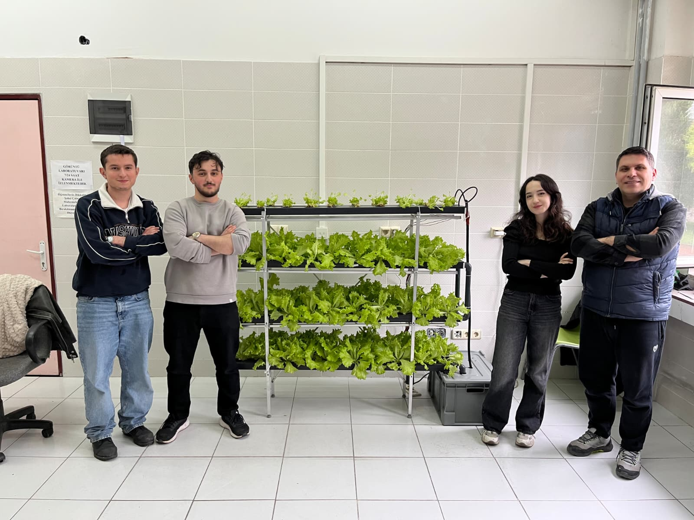
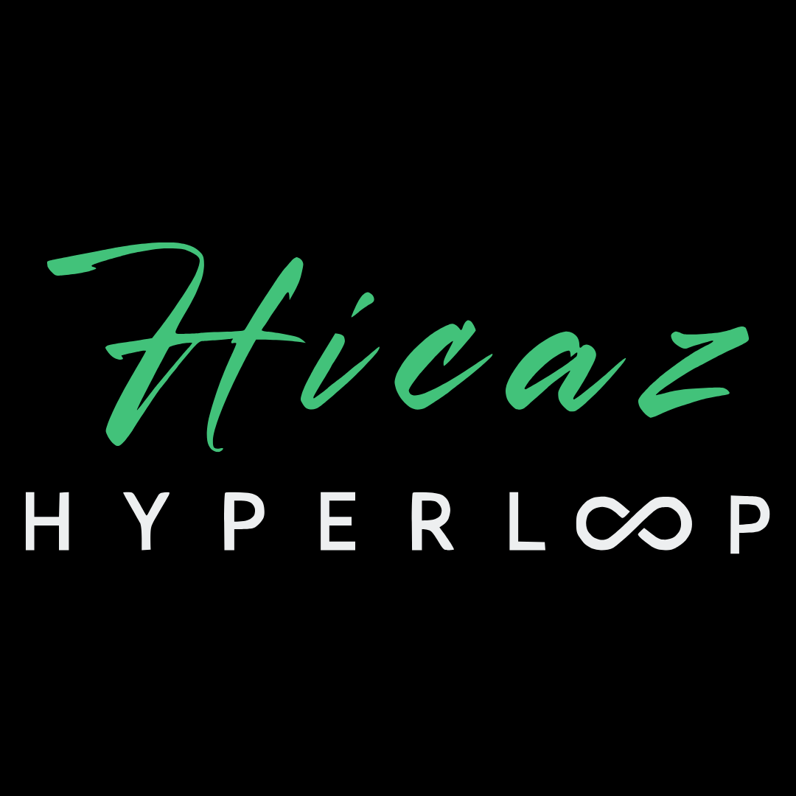

Gerçek zamanlı veri
CANbus, UART, sensör okuma, telemetri ve düşük gecikmeli veri akışı.
AIoT Engineer
Computer Engineering Student
Gömülü sistemler, gerçek zamanlı haberleşme ve yapay zekayı fiziksel sistemlere bağlayan uçtan uca mühendislik çözümleri geliştiriyorum.
Karabük Üniversitesi Bilgisayar Mühendisliği öğrencisiyim. Hicaz Hyperloop takımında yazılım ve haberleşme biriminde takım liderliği yapıyor, CANbus, telemetri, pod ve yer istasyonu yazılımları üzerine çalışıyorum.
TÜBİTAK 2209-A ve Karabük BAP destekli otonom hidroponik tarım projesinde Raspberry Pi, Arduino, sensör kontrolü, Firebase, görüntü işleme ve kendi veri setimle eğitilen AI modelini bir araya getirdim.
Sektörde beni ayrıştıran taraf, yalnızca web ya da yalnızca model geliştirme değil; sensörden gelen veriyi anlamlandırıp donanımı güvenli biçimde kontrol eden AIoT mimarileri kurabilmem.
CANbus, UART, sensör okuma, telemetri ve düşük gecikmeli veri akışı.
Pompa, röle, LED, pH/EC dozajlama ve fail-safe karar döngüleri.
EfficientNet-B0, görüntü işleme, veri seti hazırlama ve edge uyumlu modeller.
Raspberry Pi ve Arduino Mega arasında UART haberleşmesi, sensör-pompa kontrolü, Firebase destekli izleme, pH/EC optimizasyonu ve bitki hastalık tespiti için görüntü işleme modeli geliştirildi.
Projenin akademik çıktıları için aktif olarak makale ve rapor yazımı üzerinde çalışıyorum.


Pod ve yer sistemi arasında güvenilir veri akışı için CANbus protokolü, Raspberry Pi üzerinde telemetri verilerinin Go ile işlenmesi ve WebSocket üzerinden canlı haberleşme mimarisi üzerine çalışıyorum.
Yazılım ve haberleşme tarafının yanında 3D tasarım süreçleriyle de ilgileniyorum.
QGroundControl üzerinde C++ eklentileri ve özel UI modülleri geliştirerek düşük gecikmeli veri akışına uygun kontrol istasyonu deneyimi tasarlandı.
Godot Engine ve ekip çalışmasıyla kısa sürede oynanabilir prototipler geliştirildi; oyun mekaniği, UI ve üretim disiplini pratiği kazanıldı.
T.C. Gençlik ve Spor Bakanlığı bünyesinde genç grupların koordinasyonu ve liderliği.
Hicaz Hyperloop takımında CANbus, telemetri, C++ GUI ve haberleşme mimarisi.
Uzaktan yürütülen akademi programında savunma teknolojileri ve mühendislik odağı.
Teknik etkinlikler, dijital iletişim akışı ve öğrenci topluluğu koordinasyonu.
Python kod çıktıları, mantık hataları, performans iyileştirme ve TR-EN değerlendirme.
Go ile REST API, işçi operasyon takip otomasyonu, Postman ve veritabanı entegrasyonu.
Flutter, mobil uygulama geliştirme, teknoloji girişimciliği ve app jam deneyimi.
Hicaz Hyperloop telemetri arayüzleri, Qt tabanlı yazılımlar ve drone kontrol istasyonu.
Yapay zeka eğitimi, görüntü işleme, veri hazırlama ve Raspberry Pi servisleri.
Gömülü sistem mantığı, mikrodenetleyici temelleri ve donanıma yakın algoritmalar.
KARDEMIR backend otomasyonu ve Hicaz'da Raspberry Pi telemetri-WebSocket hattı.
Web arayüzleri, etkileşimli portfolyo bölümleri ve istemci tarafı kontrol akışları.
Next.js tabanlı izleme panelleri ve daha güvenli frontend veri modelleri.
Kişisel portfolyo, proje sunum sayfaları ve web arayüzlerinin iskeleti.
Responsive portfolyo tasarımı, kart sistemleri ve teknik arayüz düzenleri.
Bilgisayar mühendisliği dersleri ve nesne yönelimli programlama pratiği.
Flutter ile mobil uygulama geliştirme sürecinde kullandığım ana dil.
Oyun ve Uygulama Akademisi döneminde mobil uygulama prototipleri.
Hidroponik sistem izleme arayüzü ve Firebase bağlantılı kontrol panelleri.
Canlı veri izleme ekranları ve bileşen tabanlı kullanıcı arayüzleri.
Hidroponik sistemde canlı veri, konfigürasyon ve uzaktan izleme altyapısı.
Backend servisleri ve geliştirme ortamlarını taşınabilir hale getirme çalışmaları.
Hidroponik sistem veri köprüsü ve Hicaz telemetri aktarım bilgisayarı.
Sensör okuma, pompa kontrolü, röle yönetimi ve pH/EC karar döngüleri.
C++ tabanlı GUI geliştirme, QGroundControl özelleştirme ve kontrol ekranları.
Raspberry Pi servisleri, geliştirme ortamları ve sistem seviyesinde çalışma.
Projelerin versiyon kontrolü, portfolyo yayını ve ekip içi kod takibi.
3D modelleme, teknik görselleştirme ve Hicaz tarafındaki tasarım ilgim.
UI/UX denemeleri, arayüz planlama ve teknik sunum tasarımları.
Game Jam süreçlerinde 2D oyun prototipleri ve oyun mekaniği geliştirme.
Bitki görüntülerinin işlenmesi, sınıflandırmaya hazırlık ve görsel analiz akışları.
C, C++, Python, Go, Dart, Java, JavaScript, TypeScript, HTML, CSS
PyTorch, TensorFlow, Keras, LSTM, EfficientNet, OpenCV, Pandas, Kaggle
ESP32, Raspberry Pi, Arduino Mega, CANbus, UART/SPI, sensör ve pompa kontrolü
Next.js, React, Firebase, REST API, Docker, Postman, phpMyAdmin
Git, GitHub, Linux, Qt Creator, QGroundControl, Figma, Blender, Godot
Türkçe ana dil, İngilizce B2, Karabük Üniversitesi Computer Engineering